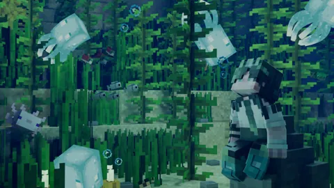
01 / 15СмотретьБольшая сцена · Blender
Независимый 3D-художник
Привет, я Криспи. Превращаю мир Minecraft
в рендеры с атмосферой и характером.
Из игры —
в историю.
01 / Портфолио
От маленького аватара до целого мира.
У каждой работы — своё
настроение.

01 / 15СмотретьБольшая сцена · Blender
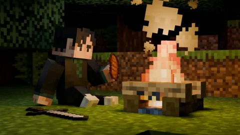
02 / 15СмотретьБольшая сцена · Blender
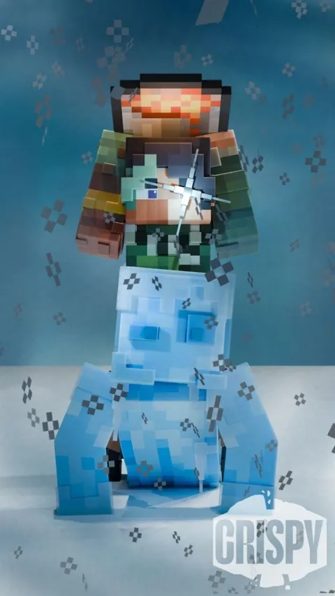
03 / 15СмотретьМини-сцена · Blender
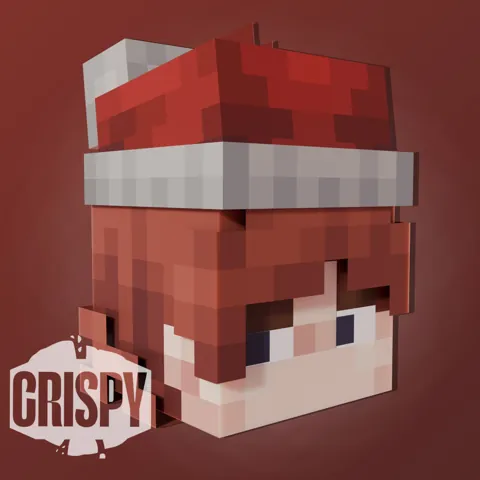
04 / 15СмотретьАватар с моделями · Blender
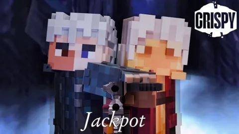
05 / 15СмотретьМини-сцена · Blender
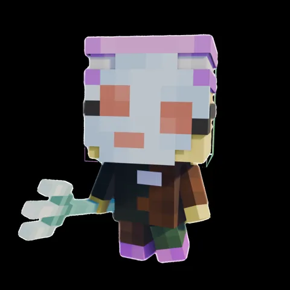
06 / 15СмотретьАватар с моделями · Blender
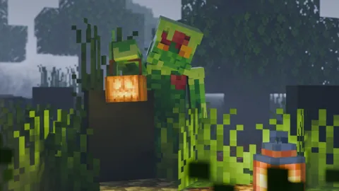
07 / 15СмотретьБольшая сцена · Blender
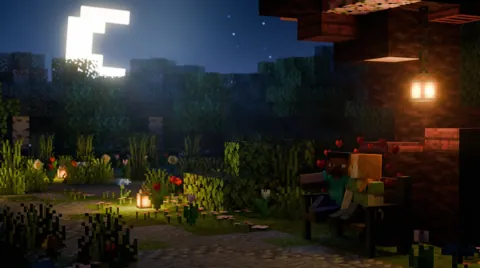
08 / 15СмотретьБольшая сцена · Blender
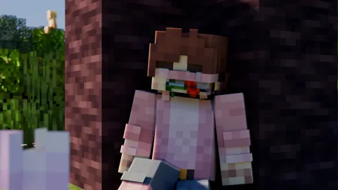
09 / 15СмотретьМини-сцена · Blender
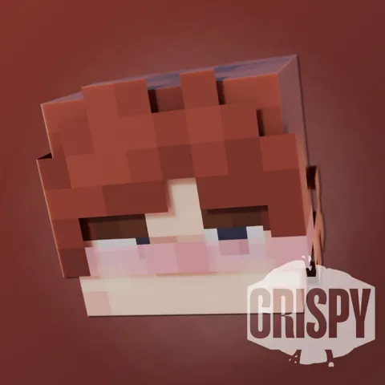
10 / 15СмотретьАватар · Blender
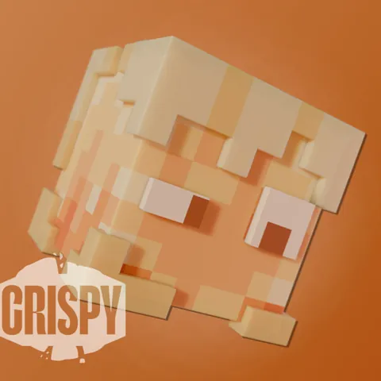
11 / 15СмотретьАватар · Blender
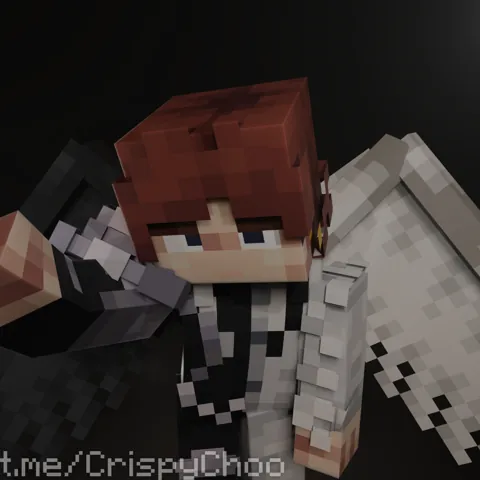
12 / 15СмотретьМини-сцена · Blender
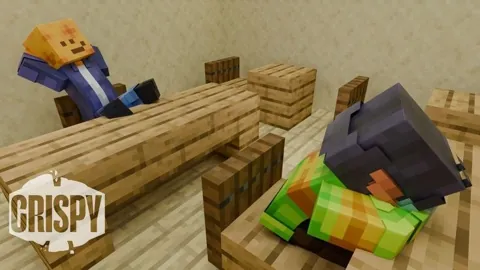
13 / 15СмотретьМини-сцена · Blender
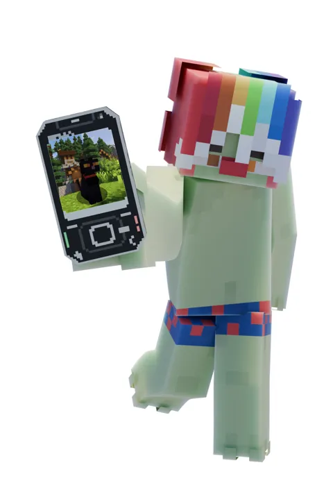
14 / 15СмотретьЭксперимент · Blender
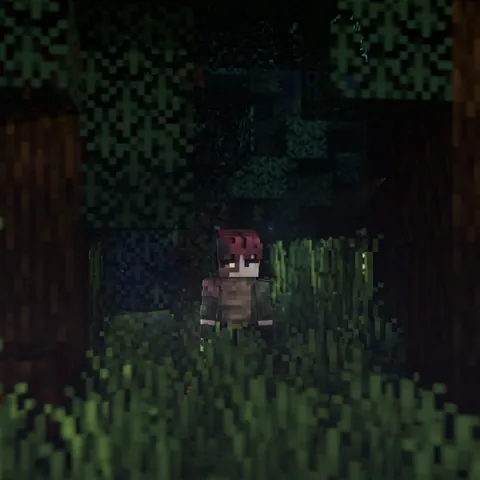
15 / 15СмотретьБольшая сцена · Blender
Попробуйте другое название или категорию.
Показано 5 из 15 работ
Нажмите на работу,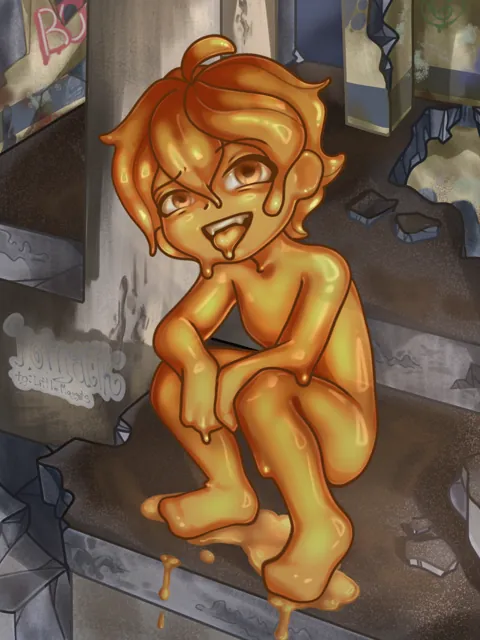
Да, это я.02 / За кадром
Я Криспи — создаю 3D-рендеры и анимации в Blender. Люблю Minecraft за то, как из простых форм рождаются целые миры.
Уже больше года экспериментирую со светом, собираю сцены и добавляю в каждый кадр маленькую историю. Сделаем и вашу?
03 / Сделаем что-нибудь крутое
Аватар для профиля или сцена с друзьями?
Начнём с идеи.
Остальное соберём.
Пришлите скин, описание и референсы. Чёткое ТЗ поможет попасть в ваше настроение.
Работа занимает от 3 до 10 дней, в зависимости от сложности сцены.
Правки до финальной сдачи бесплатны. Важно, чтобы результат вам нравился.
04 / Обратная связь
Есть идея? Я на связи.